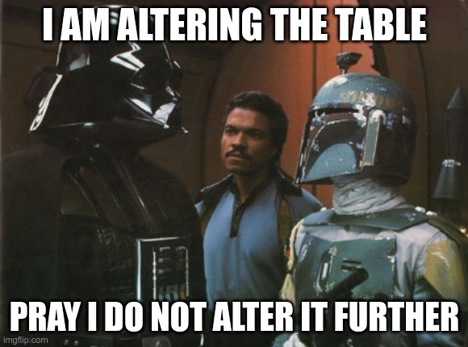

Jed Rembold
Wednesday, October 9, 2024
GROUP BY and
HAVING can be very useful here!
GROUP BY all the columns that you want
to check for repetitionHAVING to only grab those groups
that have more than one element (and thus a repetition)SELECT |||col1|||, |||col2|||, |||col3|||, |||col4|||, COUNT(*)
FROM |||table_name|||
GROUP BY |||col1|||, |||col2|||, |||col3|||, |||col4|||
HAVING COUNT(*) > 1;SELECT
COUNT(*) - COUNT(|||col1|||) as |||col1|||,
COUNT(*) - COUNT(|||col2|||) as |||col2|||
FROM |||table_name|||;GROUP BY effectively, you really
need categories to be consistently named across the data setGROUP BY could do similar but add
countsLENGTH string function
LENGTH(str) just returns the number of
characters in said stringSELECT *
FROM |||table_name|||
WHERE LENGTH(|||col1|||) != 5;ALTER TABLEUPDATE
ALTER TABLE is generally followed by the
table name and then another keyword command, depending on what you want
to doALTER TABLE |||table_name||| ...Adding columns:
... ADD COLUMN |||col_name||| |||data_type|||;Removing columns
... DROP COLUMN |||col_name|||;ALTER TABLE |||table_name||| ...Changing columns
... ALTER COLUMN |||col_name||| SET DATA TYPE |||data_type|||;
... ALTER COLUMN |||col_name||| SET NOT NULL;Renaming columns
... RENAME |||col_name||| TO |||new_col_name|||;Rename entire table
... RENAME TO |||new_table_name|||;UPDATE itUPDATE sets particular columns to a
particular value
UPDATE |||table_name|||
SET |||col_name||| = |||new_value|||;WHEREFROM:UPDATE |||table_name|||
SET |||col_name||| = |||table_name2|||.|||col_name|||
FROM |||table_name2|||
WHERE |||table_name|||.|||col_name||| = |||table_name2|||.|||col_name|||